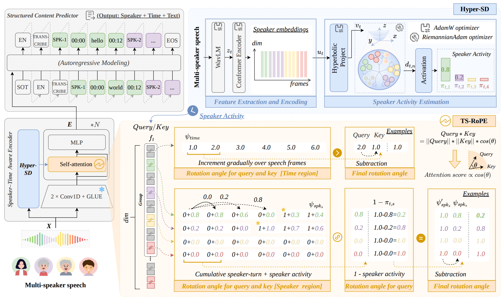
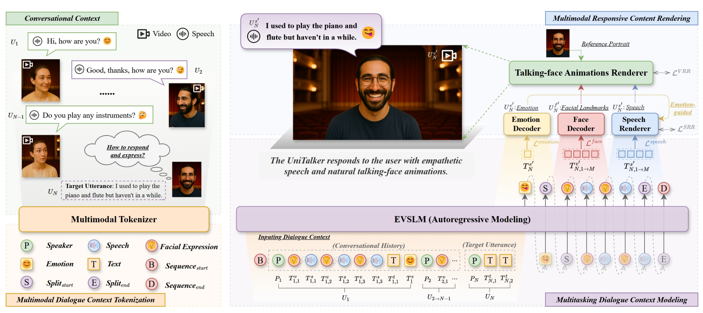
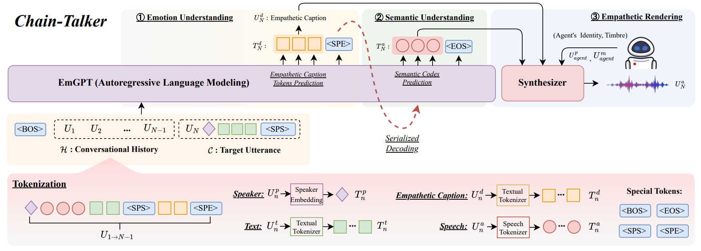
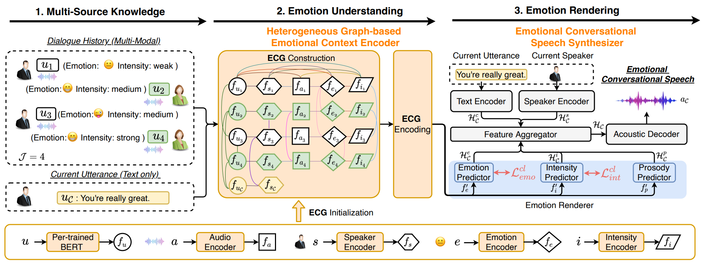
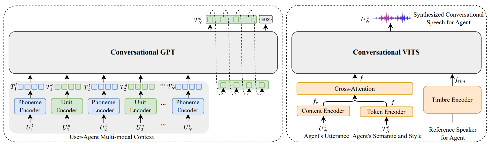
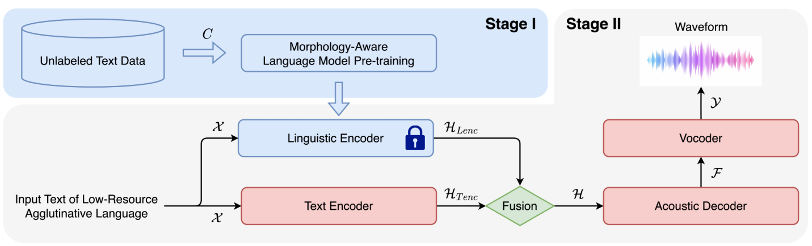

I am a Ph.D. candidate at Inner Mongolia University (内蒙古大学), advised by Prof. Rui Liu. My research interests include conversational speech synthesis (CSS), text-to-speech (TTS), multimodal understanding, and low-resource language speech processing. I have published multiple papers at top international AI conferences and journals such as ACL, AAAI, ACM MM, and IEEE/ACM TASLP. I am actively collaborating with Yi Ren (HeyGen), Peiji Yang (Tencent), Zhisheng Wang (Tencent), and Haizhou Li (The Chinese University of Hong Kong, Shenzhen). If you are seeking any form of academic cooperation, please feel free to email me at hyfwalker@163.com.
🔥 News
- 2026.01: 🎉 Our paper TellWhisper was accepted by ACL 2026 (Main). This work tackles multi-speaker ASR by telling Whisper who speaks when.
- 2025.10: 🎉 Our paper UniTalker was accepted by ACM MM 2025. We introduce conversational speech-visual synthesis for coherent audiovisual responses.
- 2025.08: 🎉 Our paper Chain-Talker was accepted by ACL 2025 (Findings).
- 2025.07: ⭐ Selected for the Tencent Rhino Bird Elite Talent Program (腾讯犀牛鸟精英人才计划).
- 2025.04: ⭐ Selected for the CAST Young Talent Lifting Project Ph.D. Special Program (中国科协青年人才托举工程博士生专项计划).
- 2025.03: 🏆 Awarded the President's Encouragement Scholarship (校长励学奖) of Inner Mongolia University.
- 2024.12: 🎉 Received the National Scholarship (国家奖学金) for Ph.D. students.
- 2024.07: 🎉 Our paper GPT-Talker was accepted by ACM MM 2024.
- 2023.12: 🎉 Our paper ECSS was accepted by AAAI 2024.
📝 Publications
Representative Work

TellWhisper: Tell Whisper Who Speaks When
Yifan Hu, Peiji Yang, Zhisheng Wang, Yicheng Zhong, Rui Liu (First Author / 第一作者)
- This paper proposes TellWhisper, a novel approach for multi-speaker automatic speech recognition that effectively tells Whisper who speaks when, achieving superior performance on conversational speech benchmarks.

UniTalker: Conversational Speech-Visual Synthesis
Yifan Hu, Rui Liu, Yi Ren, Xiang Yin, Haizhou Li (First Author / 第一作者)
- This paper introduces the Conversational Speech-Visual Synthesis (CSVS) task and proposes UniTalker, a unified model that seamlessly integrates multimodal perception and rendering for coherent audiovisual responses.

Chain-Talker: Chain Understanding and Rendering for Empathetic Conversational Speech Synthesis
Yifan Hu, Rui Liu, Yi Ren, Xiang Yin, Haizhou Li (First Author / 第一作者)
- This paper presents Chain-Talker, a three-stage framework mimicking human cognition for empathetic conversational speech synthesis, comprising Emotion Understanding, Semantic Understanding, and Empathetic Rendering.

Rui Liu, Yifan Hu, Yi Ren, Xiang Yin, Haizhou Li
- This paper proposes ECSS, a novel emotional CSS model featuring a heterogeneous graph-based emotional context encoder and a contrastive learning-based emotion renderer, significantly outperforming baselines in emotion understanding and rendering.

Generative Expressive Conversational Speech Synthesis
Rui Liu, Yifan Hu, Yi Ren, Xiang Yin, Haizhou Li
- This paper proposes GPT-Talker, a generative expressive CSS system that transforms multimodal dialogue history into expressive conversational speech using GPT-based context modeling.

Rui Liu, Yifan Hu, Hao Zuo, Zhipeng Luo, LongBiao Wang, Guanglai Gao
- This paper introduces MAM-BERT, a morphology-aware masking based BERT model for low-resource agglutinative language TTS, effectively exploiting prosody-related linguistic information to enhance synthesized speech naturalness.
More Publications
-
AAAI 2025 Multi-modal and Multi-scale Spatial Environment Understanding for Immersive Visual Text-to-Speech. Rui Liu, Shuwei He, Yifan Hu, Haizhou Li. Project
-
ISCSLP 2024 FCTalker: Fine and Coarse Grained Context Modeling for Expressive Conversational Speech Synthesis. Yifan Hu, Rui Liu, Guanglai Gao, Haizhou Li. Project
-
NCMMSC 2023 MnTTS2: An Open-Source Multi-Speaker Mongolian Text-to-Speech Synthesis Dataset. Kailin Liang, Bing Liu, Yifan Hu, Rui Liu, Feilong Bao, Guanglai Gao. Project
- IALP 2022 MnTTS: An Open-Source Mongolian Text-to-Speech Synthesis Dataset and Accompanied Baseline. Yifan Hu, Pengkai Yin, Rui Liu, Feilong Bao, Guanglai Gao. Project
🔬 Projects
- 2023 - 2025, Principal Investigator, Inner Mongolia Autonomous Region Graduate Research Innovation Project: "Research on Expressive Modeling for Conversational Speech Synthesis Based on Heterogeneous Graphs" (Completed / 已结项)
- 2023 - 2025, Principal Investigator, Inner Mongolia Autonomous Region Graduate Research Innovation Project: "High-Expressiveness Conversational Speech Synthesis Based on Chain-of-Thought" (Completed / 已结项)
- 2023 - 2025, Principal Investigator, Inner Mongolia University Graduate Research Innovation Project (Key Project): "Human-like Spoken Dialogue Generation Based on Large Language Models" (Completed / 已结项)
📋 Patents
- A Multimodal-Based Automatic Mongolian Prosody Annotation Method (一种基于多模态的蒙古语韵律自动标注方法), Application No. 202310145902.3, Under substantive examination (进入实质审查阶段)
- A Mongolian Automatic Speech Quality Assessment Method Based on Hierarchical Transfer Learning (一种基于层次化迁移学习的蒙古语自动语音质量评估方法), Patent No. ZL 2023 1 0145884.9, Granted (已授权)
- A Fake Voice Detection Method Based on Dual-Track Differential Modeling (一种基于双声道差异建模的语音鉴伪方法), Patent No. ZL 2023 1 1223079.X, Granted (已授权)
🏆 Honors and Awards
- 2026 Inner Mongolia Autonomous Region College Student of the Year (内蒙古自治区大学生年度人物称号)
- 2025 Selected for the Tencent Rhino Bird Elite Talent Program (腾讯犀牛鸟精英人才计划)
- 2025 Selected for the CAST Young Talent Lifting Project Ph.D. Special Program (中国科协青年人才托举工程博士生专项计划)
- 2025 President's Encouragement Scholarship (校长励学奖), Inner Mongolia University
- 2024 National Scholarship (国家奖学金) for Ph.D. students
- 2024 Travel Grant Award, The 14th International Symposium on Chinese Spoken Language Processing (ISCSLP 2024)
- 2024 Gold Prize (National Level) in the China International College Students' Innovation Competition (2024) for the project "Altai Electronics - One-stop Digital Solution for Complex-script Ancient Literature"
- 2023 Bronze Prize (National Level) in the China International College Students' Innovation Competition (2023) for the project "Truth-seeking - Multilingual Multimodal Trustworthy AI Identification Assistant"
- 2023 Doctoral Academic Scholarship (博士研究生学业奖学金)
- 2022 Silver Prize (Autonomous Region Level) in the China International College Students' Innovation Competition (2022) for the project "Intelligent Mongolian Medicine Knowledge Base Cloud Service Platform"
- 2022-2023 Merit Student (三好学生), Inner Mongolia University
- 2022 Master's Academic Scholarship (硕士研究生学业奖学金)
- 2021-2022 Outstanding Student Leader (优秀学生干部), Inner Mongolia University
- 2021 Outstanding Volunteer (优秀志愿者), Inner Mongolia University
📖 Educations
- 2022.09 - Present, Ph.D. Candidate, Inner Mongolia University (内蒙古大学), Computer Science and Technology
- 2020.09 - 2022.06, Master, Inner Mongolia University (内蒙古大学), Computer Science and Technology
- 2017.09 - 2021.07, Bachelor, Tianjin University of Technology (天津理工大学), School of Computer Science and Engineering
💻 Internships
- 2025.02 - Present, Algorithm Intern, Tencent, Shenzhen, China. Responsible for multi-speaker speech recognition model R&D and podcast speech synthesis model R&D.
- 2023 - 2024, Algorithm Intern, Inner Mongolia Altai Electronic Information Technology Co., Ltd., Hohhot, China. Responsible for Mongolian corpus collection, recording monitoring and correction, and development of advanced Mongolian TTS models.